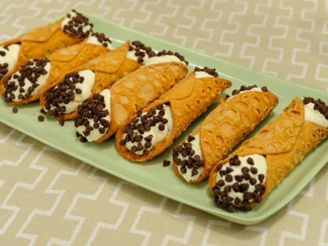

Cannoli Recipe

Ingredients
Shells
- 4 cups sifted all-purpose flour
- 2 tablespoons sugar
- 1/4 teaspoon salt
- 3 tablespoons butter, softened
- 2 egg yolks
- 3/4 cup white wine
- shortening, for frying
Filling
- 4 cups whole milk ricotta cheese
- 1 1/2 cups powerdered sugar
- 1 tablespoon vanilla extract
- 1/3 cup finely chopped maraschino cherry
- 1/4 cup semisweet mini chocolate
- 1 cup heavy whipping cream, optional
Instructions
- To make shells, mix flour, sugar and salt in a bowl.
- Cut in butter.
- Add egg yolks; stir with a fork.
- Stir in wine, 1 tablespoon at a time, with a fork until dough clings together.
- Form a ball with the dough and let stand for 30 minutes